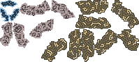

<!doctype html>
<html>
<style>
    body {
        background-color: black;
    }
    .view {
        padding: 0;
        margin: auto;
        display: block;
    }
    .scene {
        display: none;
    }
</style>

<head>
</head>

<body onload="POM.init()">
    
    <!-- all the images I need 
    
    
    
    
    
    
    
    
    -->

    <!-- main and work canvases -->
    <canvas id="mainView" class="view" width="576" height="576"></canvas>
    <canvas id="bufferView" class="scene" width="576" height="576"></canvas>
    
    
    <!-- title scene 
    <canvas id="initZone" class="zone" width="576" height="576"></canvas>
    <canvas id="loadZone" class="zone" width="576" height="576"></canvas>
    -->
    
    <!-- gameplay scene 
    <canvas id="playZone" class="zone" width="416" height="416"></canvas>
    <canvas id="textZone" class="zone" width="576" height="160"></canvas>
    <canvas id="miniZone" class="zone" width="160" height="160"></canvas>
    <canvas id="statZone" class="zone" width="160" height="256"></canvas>
    -->

</body>
    <!--
    Load up Nautilus first for POM dependencies.
    In the stable release, this shoud be a minified complete
    version of Nautilus, so one script instead of many.
    -->
    <script src="NAUTILUS.js"></script>
    <script src="NAUTILUS/App.js"></script>
    <script src="NAUTILUS/App/Router.js"></script>
    <script src="NAUTILUS/App/Util.js"></script>
    <script src="NAUTILUS/Data.js"></script>
    <script src="NAUTILUS/Data/Factory.js"></script>
    <script src="NAUTILUS/Data/Registry.js"></script>
    <!--
    <script src="NAUTILUS/Game.js"></script>
    <script src="NAUTILUS/Game/Action.js"></script>
    <script src="NAUTILUS/Game/World.js"></script>
    -->
    <script src="NAUTILUS/Ui.js"></script>
    <script src="NAUTILUS/Ui/Input.js"></script>
    <script src="NAUTILUS/Ui/View.js"></script>
    
    <script src="POM.js"></script>
</html>
